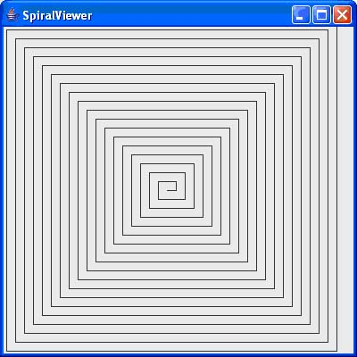

Programming Assignment
6
DUE at the starting of the class on 10/15/2007 (Monday)
Do the following questions from the text book:
1) Exercise R6.4
Rewrite the following for loop into a while loop
int s = 0;
for (int i = 1;i<=10;i++)
s = s + i;
2) Exercise R6.8
Implement a loop that prompts a user to enter a number between 1 and 10, giving
three tries to get it right.
3) Exercise P 6.17
Write a graphical application that draws a spiral, such as the following:

SpiralGenerator.java (Given to you guys)
SpiralComponent.java
SpiralViewer.java